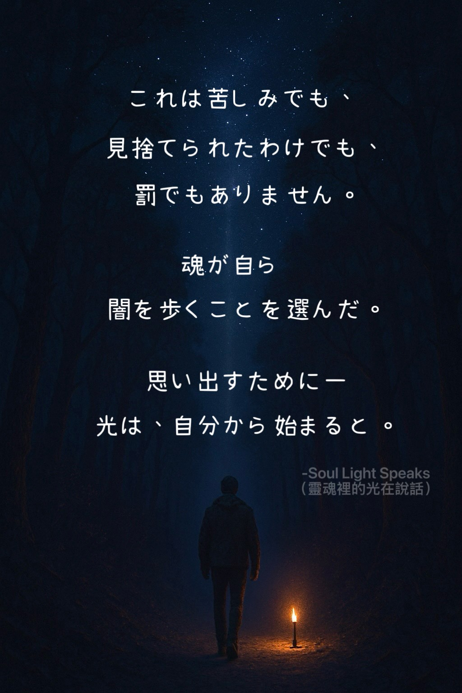

🔹人間としての経験

道を間違えても、
終わりじゃない。
ナビは責めない。
ただこう言う——
「ルートを再検索します。」
人生も同じ。
遠回りは失敗じゃない。
旅の一部にすぎない。

深く愛されて
育ったなら、
その幼い日々が
人生を支えてくれる。
そうでなければ、
人生そのものが旅となり、
内なる子どもを癒していく。

物語を離れても、
それでもなお、この壊れた世界を
静かに繕っている。
物語の中にはいなくても、
繕いの中には、確かにいる。

美しさは、
誰かのものではない。
ただ、少しの間、
共に歩むだけ。
縁があれば出会い、
縁が尽きれば、
静かに見送るだけ。

闇を知る者だけが、
そこから人を導ける。
光が強いほど、
影も深くなる。

深く刻まれたものすべてが、
忘れるためにあるわけではない。
中には、
人生をともに歩むものもある。
🔹覚醒への旅


🔹宇宙的な視点

人はこの世に、
体験し、学ぶために来る。
人生が苦しいとき、
それは過去の行いの
結果かもしれない。
今世での悪は、
来世で返ってくる。
さらにその先で、
悔い、そして癒しを学んでいく。
目覚めた人は知っている。
だからこそ、
人を傷つけない。

並行世界とは、高次元の知性が広げた無数の可能性なのかもしれない。そして今あなたが歩んでいるその一歩は、
数ある可能性の中から選ばれた道なのかもしれない。

これは苦しみでも、
見捨てられたわけでも、
罰でもありません。
魂が自ら
闇を歩くことを選んだ。
思い出すために——
光は、自分から始まると。

忘れることは贈り物。
前世を思い出すのは、
まだ魂の学びが終わっていないからかもしれない。
記憶は静かに蘇り、
あの懐かしい影へ
再び導いてくれる。